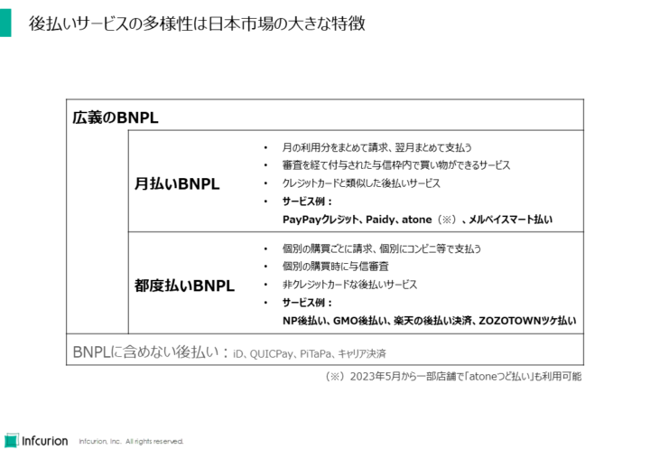
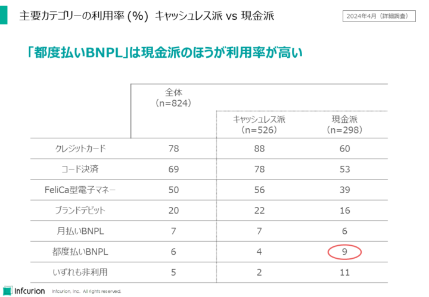
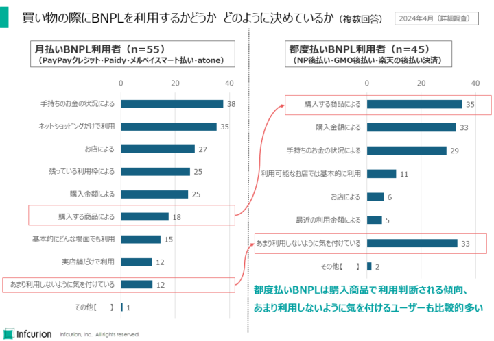
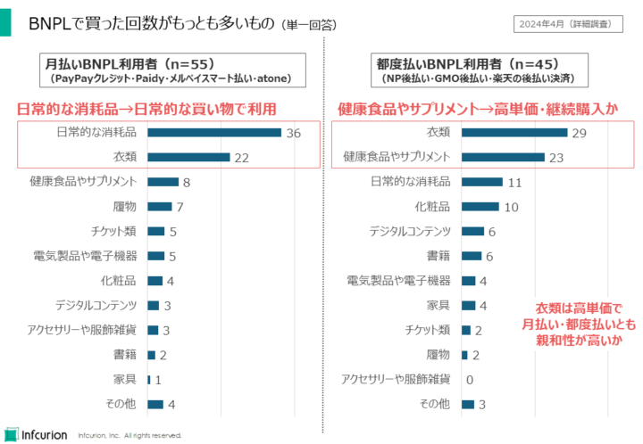
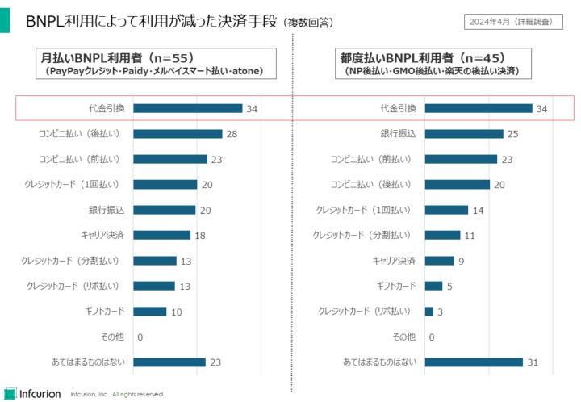

目次
「広義のBNPL」とは
前回記事では、「決済動向調査」恒例のコンテンツである、キャッシュレス決済サービスの主要カテゴリーの利用率を紹介しました（図１）。
前回記事：「コード決済利用率は過去最高の68% ～決済動向２０２４年上期調査～」（2024年7月24日）
図1 広義のBNPLの利用率は初の減少
いままで単に「BNPL」としていたカテゴリーを、今回調査では「広義のBNPL」と表記しています。これは、日本の後払いサービスの多様性を考慮したものです。
これまで「決済動向調査」では、非クレジットカードの後払いサービスをまとめてBNPLとしていました。BNPLの普及初期はそれでも問題ありませんでしたが、BNPLがキャッシュレス決済市場で一定の存在感を持つようになった現在では、多種多様な後払いサービスを1つのカテゴリーとして論じることは難しくなっています。
そこで「決済動向2024年上期調査」では、日本のBNPLサービスに「月払いBNPL」と「都度払いBNPL」という２つのサブカテゴリーを定義して分析を行いました。これにより、BNPLカテゴリーに内在していた商品性・利用導線・ユーザー像の違いを明らかにすることができました。そして、「月払いBNPL」と「都度払いBNPL」を合わせたものを、「広義のBNPL」としています。
「月払いBNPL」と「都度払いBNPL」
月の利用分をまとめて請求する「月払いBNPL」と、個別の購買ごとに請求する「都度払いBNPL」は図２のように定義しています。

図２ 後払いサービスの多様性は日本市場の大きな特徴
たとえば、PayPayクレジット、Paidy、atone、メルペイスマート払いは「月払いBNPL」の例です。月の利用分をまとめて請求し、ユーザーはそれを翌月まとめて支払うことが前提になっています。審査を経て付与された与信枠内で買い物ができるサービスであるという意味では、クレジットカードと類似した後払いサービスであるといえます。（atoneは2023年5月から一部店舗で「つど払い」も利用可能。）
それに対し、NP後払い、GMO後払い、楽天の後払い決済、ZOZOTOWNツケ払いは「都度払いBNPL」の例となります。個別の購買ごとに請求があり、利用者は個別にコンビニ等で支払うという形態の後払いサービスです。与信審査も個別の購買時に行うため、与信枠という概念もありません。「非クレジットカードな後払いサービス」というBNPLの当初の定義がよくあてはまります。
日本における非クレジットカードの後払いサービスの歴史は長く、従来からiDやQUICPay、PiTaPaやキャリア決済（d払い、auかんたん決済、ソフトバンクまとめて支払い）などがありますが、「決済動向調査」ではこれらはBNPLには含めていません。世界でBNPLと呼ばれるようになった新興のEC向け決済と、コード決済など新興の決済サービスをベースとするものなど、「新興の後払いサービス」を「BNPL」としているためです。
現金派と親和性の高い「都度払い」
月払いと都度払いを分けることで、新たな示唆を得られるようになりました。例えば図3は既出ですが、キャッシュレス派と現金派それぞれの、主要カテゴリー利用率を算出したものです。ほぼ全てのカテゴリーにおいてキャッシュレス派の利用率は現金派の利用率を上回っていますが、一つだけ例外があります。「都度払いBNPL」では、キャッシュレス派の利用率は4%なのに対し、現金派の利用率は9%で、現金派のほうが利用率が高くなっているのです。
図3はこちらの記事でも解説しました：「増え続ける「キャッシュレス派」の消費者 ～決済動向２０２４年上期調査～」（2024年6月18日）

図３ 「都度払いBNPL」は現金派のほうが利用率が高い
キャッシュレス派に比べると、現金派はどうして都度払いBNPLの利用率が高めになっているのでしょうか。コンビニで支払う際に現金払いが可能であることや、オンラインショッピングでの支払い方法としてクレジットカードよりも敷居が低いように感じられていること、などが仮説として考えられます。同じ後払いでも、都度払いと月払いでは、消費者心理における位置づけが大きく異なることを示唆する大変興味深い結果です。
どうやって利用するかどうかを決めるのか
図4は、買い物の際にBNPLを利用するかどうかを、どのように決めているのかを、「月払いBNPL」と「都度払いBNPL」それぞれのユーザーに複数回答で聴取した結果です。

図４ 買い物の際にBNPLを利用するかどうか どのように決めているか（複数回答）
「都度払いBNPL」は購入商品で利用判断される傾向が、「月払いBNPL」よりも強く表れています。また、「あまり利用しないように気を付けている」を選択したユーザーは「月払いBNPL」では12%ですが「都度払いBNPL」では33%です。
何を買っているのか
図5は、BNPLで買った回数がもっとも多いものを、「月払いBNPL」と「都度払いBNPL」それぞれのユーザーに聴取した結果です。

図５ BNPLで買った回数がもっとも多いもの（単一回答）
「月払いBNPL」ユーザーの1位は「日常的な消耗品」、2位は「衣類」です。「都度払いBNPL」ユーザーでは「衣類」が1位、「健康食品やサプリメント」が2位でした。
月払いは「日常的な消耗品」が1位であることから、日常的な買い物で利用されているようです。「衣類」は比較的単価が高く、月払い・都度払いのどちらとも親和性が高い様子です。健康食品やサプリメントは高単価で継続購入されることが多いと思われますが、そこで「都度払いBNPL」が選択される傾向にあることがわかりました。
BNPLによって利用が減った決済手段
図6は、「月払いBNPL」と「都度払いBNPL」それぞれの利用者に、BNPLを利用することで利用が減った決済手段を複数回答で聴取した結果です。

図６ BNPL利用によって利用が減った決済手段（複数回答）
この設問においては月払い・都度払いで大きな差異は見られませんでした。どちらも「代金引換が減った」と回答したユーザーが34%だったことは興味深く、BNPLはクレジットカードを使わずにネットショッピングするための手段として機能していることが示唆されています。


{kind=link}
{kind=link}
{kind=link}
{kind=link}
{kind=link}
{kind=link}
{kind=link}